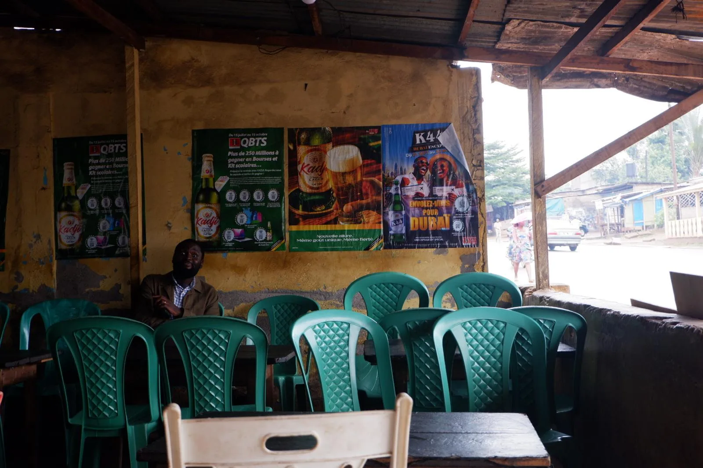
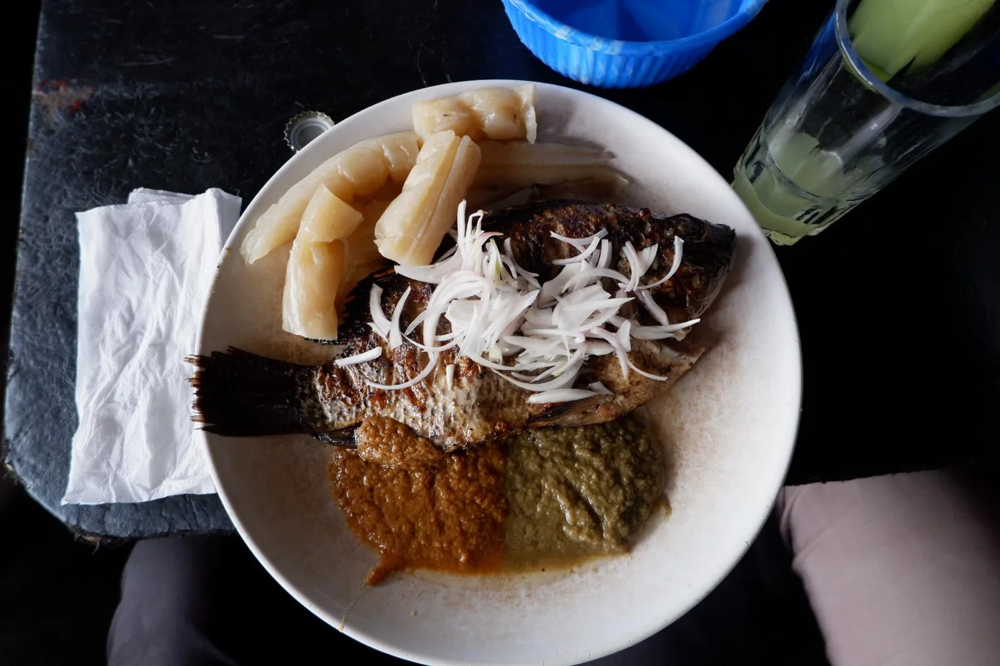
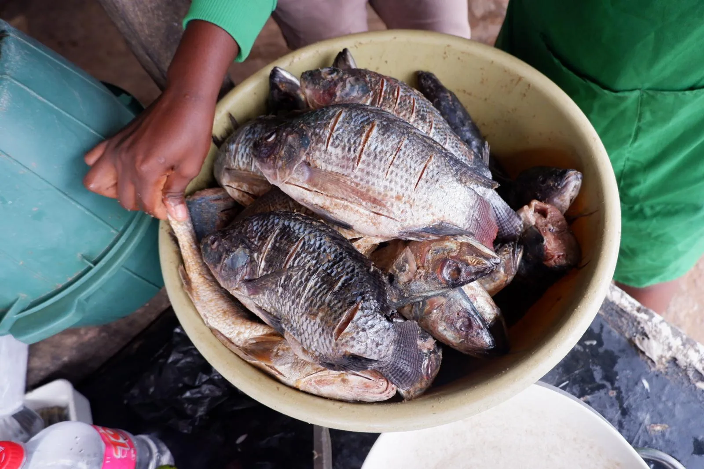
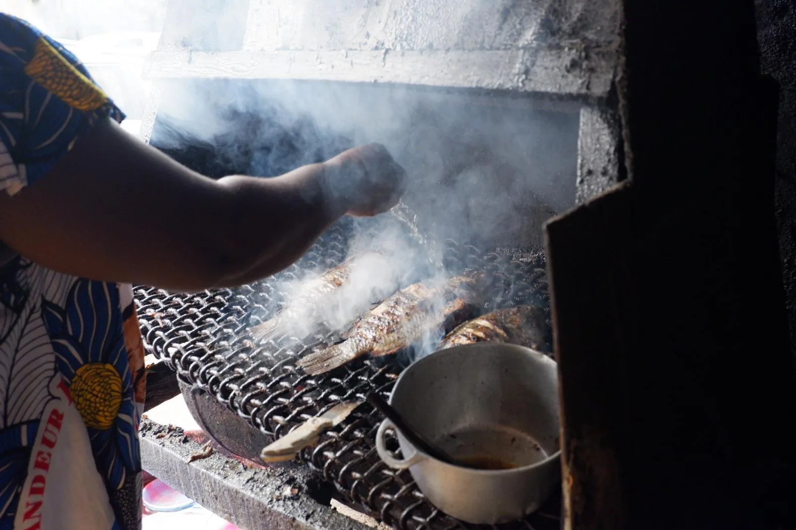
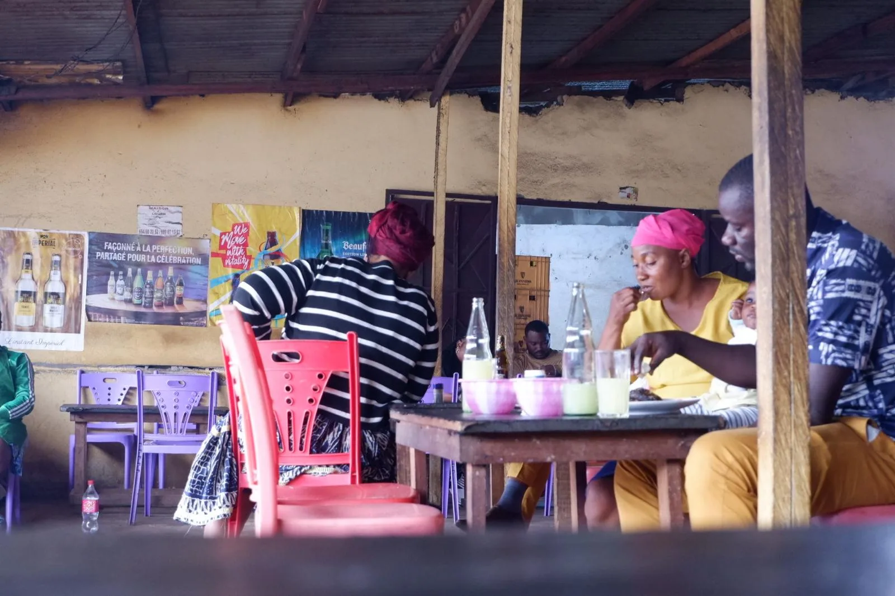
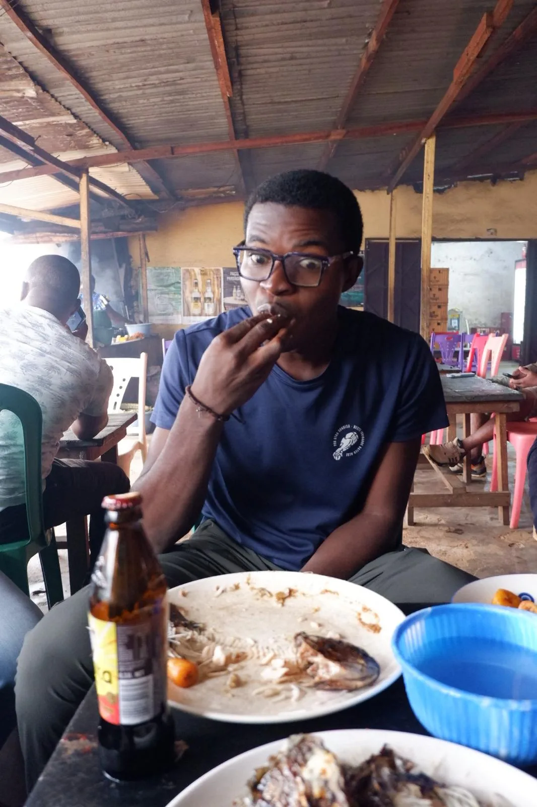
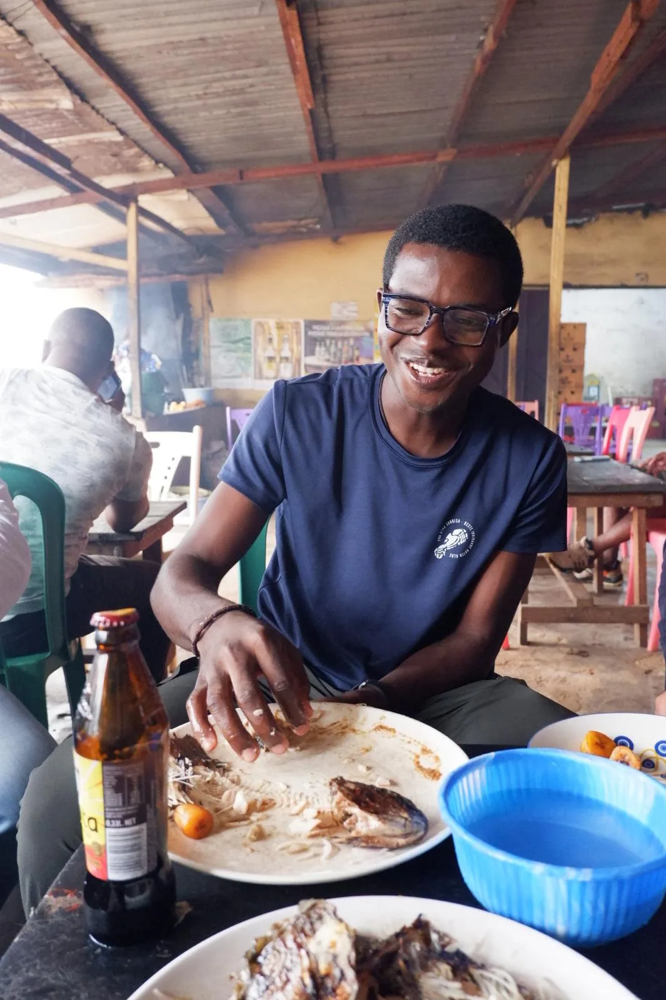
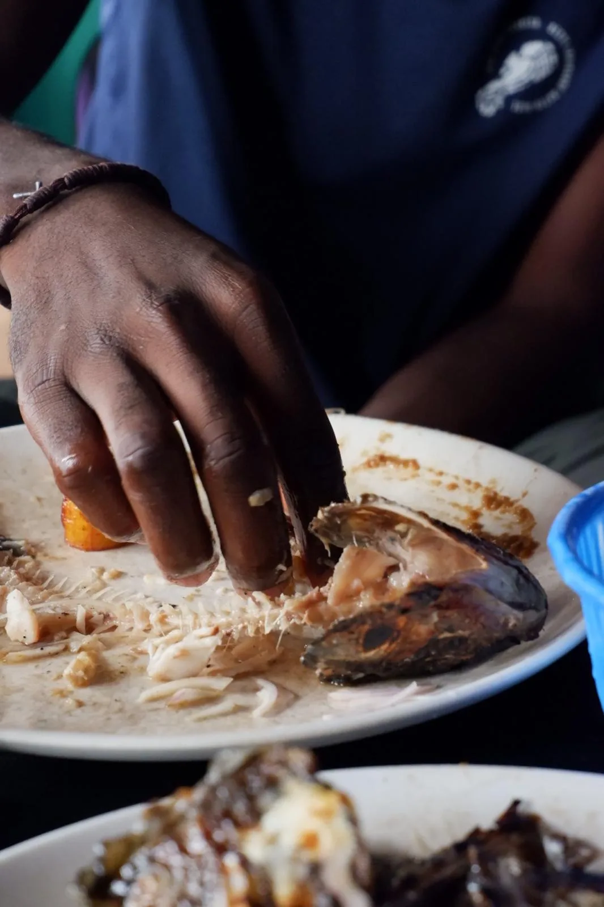
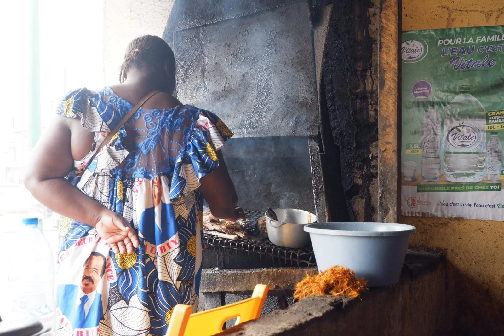
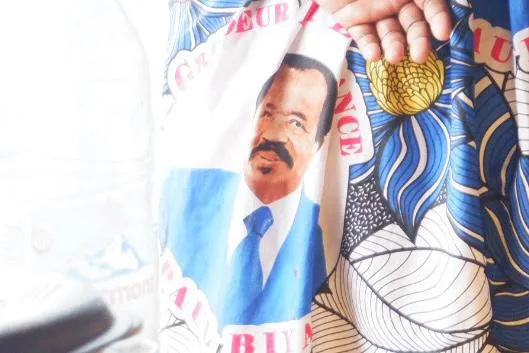

Me he levantado un rato antes para lavarme la ropa y tender, pero luego ha llovido todo el día así que sigue bien mojada. Hay tanta humedad que es muy difícil que se seque, y luego coge olor a húmedo.
Como ha llovido todo el día, no había sol, y por tanto tampoco electricidad en el colegio, que funciona con placas solares.
Junior, Kodia, George, el arquitecto que diseñó el cole y yo hemos comido en Petit Poisson, un fantástico restaurante donde solo hacen pescado a la brasa, que se come con las manos. Carpa, con plátano frito y batôns de magnoc. Estupendo. Un plato por 2,500 francos, que son unos 3,8€, que es poco para el plato que era según estándares occidentales pero aquí es un pequeño lujo.








En el vestido de la cocinera se aprecia el retrato de Paul Biya (presidente de Camerún desde 1982) bajo el lema grandeza y esperanza. Tiene 93 años. “Ganó” las últimas elecciones democráticas el pasado octubre, en las que no hizo ni campaña electoral. Es un vestido que se ve a menudo y me resulta curioso. Vestir a la gente, como método para ganar popularidad, imagino que es efectivo.


Luego me he intentado echar una siesta. Y por la tarde hemos jugado a juegos de mesa con Bibiane, Cyrille y Félicité.